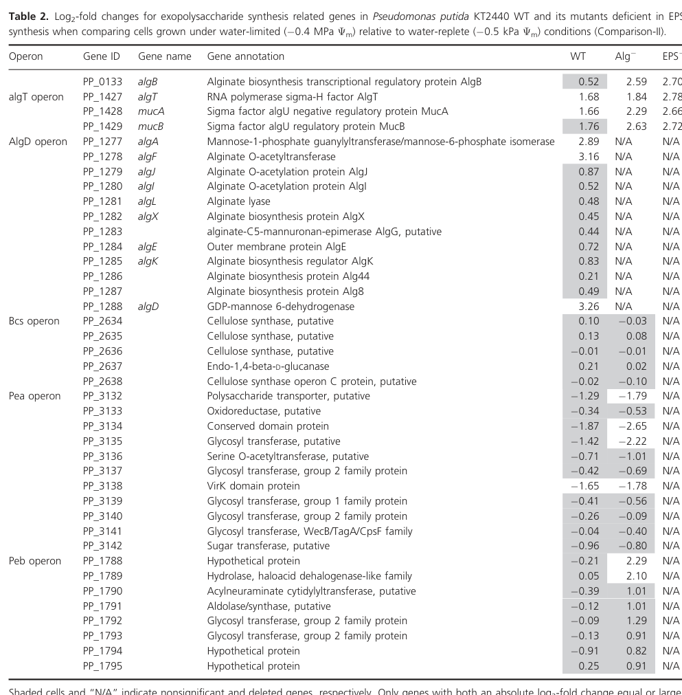

AlgF is a periplasmic interaction component of the alginate O-acetylation machinery. It binds AlgJ and AlgX and is proposed to help organize their modification complex. Purified KT2440 AlgF lacks detectable acetylesterase activity on the tested surrogate substrate, supporting a nonenzymatic assembly role. Its ortholog is required for alginate acetylation and contributes to efficient polymer production in Pseudomonas aeruginosa.
| GO Term | Evidence | Action | Reason |
|---|---|---|---|
|
GO:0042121
alginic acid biosynthetic process
|
IEA
GO_REF:0000120 |
ACCEPT |
Summary: AlgF contributes both to O-acetylation and to stable coupling with the alginate polymerization machinery.
Reason: AlgF provides interaction support to the modification/secretion machinery rather than catalyzing mannuronate polymerization. Direct KT2440 AlgJ/AlgX binding supports this structural contribution, while P. aeruginosa PDO300 deletion and stability experiments show coupling to efficient polymer production and Alg8. Retain the broader biosynthesis contribution alongside acetylation, without claiming AlgF itself is a polymerase or that the production phenotype has been measured in KT2440.
Supporting Evidence:
PMID:31900562
only the AlgF deletion impaired alginate production
PMID:31900562
AlgI and AlgF stability was strongly impaired supporting a link of the O-acetylation machinery with alginate polymerisation.
PMID:37797696
We found that AlgJPp and AlgXPp bind to AlgFPp with Kd values of 86 ± 12 μM and 178 ± 5 μM, respectively.
|
|
GO:0051979
alginic acid acetylation
|
ISS
PMID:12003941 Mutant analysis and cellular localization of the AlgI, AlgJ,... |
NEW |
Summary: AlgF is required for the periplasmic alginate O-acetylation machinery.
Reason: Nonpolar P. aeruginosa deletion and complementation establish the ortholog process role. KT2440 AlgF29–215 directly binds KT2440 AlgJ and AlgX (PMID:37797696), supporting active structural organization of acetylation machinery rather than mere necessity as a substrate. The nonenzymatic model is supported by absent surrogate acetylesterase activity; no acetyltransferase molecular function is assigned. Exact-term comparisons confirm experimental acetylation annotations on P. aeruginosa AlgI/AlgJ/AlgF and A. vinelandii AlgF; these are convention checks rather than evidence. AlgF has two same-role ortholog comparators. The term describes active protein machinery, not the polymer substrate; GO-CAM contains no target entry and this term is not an ancestor/descendant duplicate of retained biosynthesis.
Supporting Evidence:
PMID:12003941
each mutant produced alginate lacking O-acetyl groups.
PMID:37797696
We found that AlgJPp and AlgXPp bind to AlgFPp with Kd values of 86 ± 12 μM and 178 ± 5 μM, respectively.
|
|
GO:0042597
periplasmic space
|
IEA
GO_REF:0000044 |
ACCEPT |
Summary: The periplasmic-space annotation is correct for AlgF.
Reason: AlgF acts as a periplasmic component of the alginate modification machinery, so this location is part of its core biological role.
Supporting Evidence:
file:PSEPK/algF/algF-uniprot.txt
SUBCELLULAR LOCATION: Periplasm
PMID:12003941
AlgF was released with the periplasmic contents
|
Q: Does KT2440 AlgF simultaneously bridge AlgJ and AlgX in the native membrane-associated complex, and which interfaces are required for alginate acetylation?
Experiment: Test AlgF interface variants for AlgJ/AlgX ternary-complex assembly and native alginate acetylation, while controlling protein stability and localization.
Type: interaction and complementation analysis
The research report should be a detailed narrative explaining the function, biological processes, and localization of the gene product. Citations should be given for all claims.
You should prioritize authoritative reviews and primary scientific literature when conducting research. You can supplement
this with annotations you find in gene/protein databases, but these can be outdated or inaccurate.
We are specifically interested in the primary function of the gene - for enzymes, what reaction is catalyzed, and what is the substrate specificity? For transporters, what is the substrate? For structural proteins or adapters, what is the broader structural role? For signaling molecules, what is the role in the pathway.
We are interested in where in or outside the cell the gene product carries out its function.
We are also interested in the signaling or biochemical pathways in which the gene functions. We are less interested in broad pleiotropic effects, except where these elucidate the precise role.
Include evidence where possible. We are interested in both experimental evidence as well as inference from structure, evolution, or bioinformatic analysis. Precise studies should be prioritized over high-throughput, where available.
The requested target is Alginate biosynthesis protein AlgF (precursor) encoded by algF, locus PP_1278, in Pseudomonas putida strain KT2440 (UniProt Q88ND4). A KT2440 transcriptomics study explicitly lists PP_1278 = algF within the AlgD operon and annotates it as an alginate O-acetylation gene (“Alginate O-acetyltransferase”), confirming that the literature being summarized here is aligned with the specified protein identity and organism context (gulez2014colonymorphologyand pages 6-8).
Alginate is an exopolysaccharide (EPS) produced by various Pseudomonas species and is widely associated with hydrated biofilms and stress tolerance in environmental and clinical contexts (gulez2014colonymorphologyand pages 6-8, hulen2023thegdpmannosedehydrogenase pages 1-3). In P. putida KT2440 specifically, alginate is described as an important EPS under water limitation, and alginate-pathway genes show coordinated induction under water-limited conditions (gulez2014colonymorphologyand pages 6-8).
Across pseudomonads, AlgF is part of the alginate O-acetylation machinery, working with AlgI and AlgJ.
Importantly, in the retrieved KT2440-specific literature, AlgF’s role is supported directly by operon context and condition-dependent expression, while the detailed mechanistic/biochemical function and localization are inferred from conserved pseudomonad models (gulez2014colonymorphologyand pages 6-8, muhammadi2007geneticsofbacterial pages 5-7).
In KT2440, algF (PP_1278) is listed in the AlgD operon alongside other alginate biosynthesis/export/modification genes: algA (PP_1277), algJ (PP_1279), algI (PP_1280), algL (PP_1281), algX (PP_1282), algG (PP_1283), algE (PP_1284), algK (PP_1285), alg44 (PP_1286), alg8 (PP_1287), and algD (PP_1288) (gulez2014colonymorphologyand pages 6-8). This operon placement strongly supports AlgF’s primary biological role as an alginate-envelope biogenesis/modification component rather than a general metabolic enzyme (gulez2014colonymorphologyand pages 6-8).
A controlled matric-potential study in KT2440 quantified expression changes between water-limited (−0.4 MPa) and water-replete conditions. Under water limitation, algF (PP_1278) was strongly upregulated in wild-type KT2440 (log2 fold-change 3.16), consistent with activation of the alginate program (gulez2014colonymorphologyand pages 6-8). In alginate-deficient and EPS-deficient mutants (constructed by deleting alginate synthesis capacity), algF expression was not detected (N/A), consistent with loss of alginate-operon expression in those mutants (gulez2014colonymorphologyand pages 6-8).
An authoritative alginate genetics review states that algF encodes a periplasmic protein and that AlgF functions together with AlgI and AlgJ as an acetylation system, placing activity at the cell envelope (inner membrane/periplasm) rather than in the cytosol (muhammadi2007geneticsofbacterial pages 5-7). While this evidence is not KT2440-specific, the KT2440 operon context and co-expression with other envelope-localized alginate genes (e.g., algE, algK) are consistent with the conserved envelope-localized biosynthesis/export model (gulez2014colonymorphologyand pages 6-8).
AlgF is not described as a stand-alone cytosolic enzyme with a classic small-molecule substrate. Instead, the dominant model is that AlgF contributes to a multi-protein acetylation machinery that modifies the alginate polymer (polymeric mannuronic acid residues) via O-acetylation at O-2/O-3 (muhammadi2007geneticsofbacterial pages 5-7). Thus, the most appropriate “substrate specificity” statement for functional annotation is:
Substrate: polymeric mannuronic acid residues within the alginate chain (polymannuronate segments)
Reaction type: partial O-acetylation at O-2 and/or O-3 positions
Cellular location: periplasm / inner-membrane-associated envelope compartment
(muhammadi2007geneticsofbacterial pages 5-7).
A 2023 review of alginate biosynthesis in P. aeruginosa (a major reference organism for the pathway) explicitly states that “Acetylation and epimerization steps take place in the periplasm under the concerted action of AlgI, AlgJ and AlgF for O-acetylation and AlgG to epimerization” (published Nov 2023; URL: https://doi.org/10.3390/antibiotics12121649) (hulen2023thegdpmannosedehydrogenase pages 1-3). Although this is not KT2440-specific, it is a recent authoritative statement that the field still treats AlgF as a periplasmic O-acetylation component.
A 2024 chemostat study in P. putida KT2440 reports that under fast dilution rates, KT2440 forms aggregates and biofilms, and notes that KT2440 can form biofilms via synthesis/export of polymers “including alginate” (published Aug 2024; URL: https://doi.org/10.1128/msystems.00770-24) (peoples2024physiologyfastand pages 9-12, peoples2024physiologyfastand pages 1-2). Quantitatively, the study contrasts dilution rates 0.12 h−1 and 0.48 h−1, with aggregation prominent at the faster regime (peoples2024physiologyfastand pages 4-6, peoples2024physiologyfastand pages 1-2).
A 2024 applied fermentation study engineered P. putida (strain PCL1760; not KT2440) by deleting algA (involved in alginate accumulation) along with motility/adhesion genes, aiming to reduce biofilm formation in bioreactors (published Nov 2024; URL: https://doi.org/10.3390/fermentation10120606) (frolov2024constructionofthe pages 1-2). The engineered strain showed ~40% lower biofilm formation after 72 h, and achieved higher cell densities in small-volume bioreactors (e.g., 1.39×10^10 CFU/mL vs 6.4×10^9 CFU/mL in rich medium; and 6.11×10^9 CFU/mL vs 1.36×10^9 CFU/mL in mineral medium) (frolov2024constructionofthe pages 1-2, frolov2024constructionofthe pages 8-10). This illustrates a practical industry-relevant theme: alginate-pathway activity can be undesirable in fermentation due to biofilm/foam, motivating genetic strategies that reduce alginate accumulation.
Although this study does not target algF directly, it underscores the applied importance of the alginate pathway that algF belongs to, and provides quantitative, real-world bioreactor metrics (frolov2024constructionofthe pages 1-2, frolov2024constructionofthe pages 8-10).
Most defensible primary function (high confidence): AlgF (PP_1278/Q88ND4) is an alginate biosynthesis accessory protein involved in alginate O-acetylation as part of a cell-envelope (periplasm/inner-membrane-associated) modification machinery together with AlgI and AlgJ (gulez2014colonymorphologyand pages 6-8, muhammadi2007geneticsofbacterial pages 5-7, hulen2023thegdpmannosedehydrogenase pages 1-3).
Biological process/pathway placement: AlgF functions within the AlgD operon alginate biosynthesis/export/modification pathway, and is co-regulated with core alginate genes during water limitation in KT2440 (gulez2014colonymorphologyand pages 6-8).
Subcellular localization (best-supported model; inferred for KT2440): Periplasmic component of the acetylation machinery; overall pathway is an envelope-localized, multi-protein system modifying/exporting a polymer (muhammadi2007geneticsofbacterial pages 5-7).
Major evidence gap: Within the retrieved corpus, there is no direct KT2440-specific biochemical assay of PP_1278 activity and no KT2440-specific localization experiment for AlgF. Thus, mechanistic statements are strongest at the level of conserved pseudomonad pathway models and KT2440 operon/expression context (gulez2014colonymorphologyand pages 6-8, muhammadi2007geneticsofbacterial pages 5-7).
The following table consolidates claims, sources, publication dates, URLs, and evidence strength for KT2440 algF functional annotation.
| Claim/Aspect | Key finding | Organism/strain | Source (author year) | Publication date/month | URL | Evidence strength/notes | Citation ID |
|---|---|---|---|---|---|---|---|
| Gene identity / operon context | algF = PP_1278 in the AlgD operon of Pseudomonas putida KT2440; listed between algA (PP_1277) and algJ (PP_1279) and annotated as Alginate O-acetyltransferase. This matches the target UniProt entry Q88ND4 for AlgF family protein in KT2440. | Pseudomonas putida KT2440 | Gulez et al. 2014 | 2014 Jun | https://doi.org/10.1002/mbo3.180 | Direct strain-specific evidence from KT2440 transcriptomics table; strongest evidence for correct gene identification in the requested organism. | (gulez2014colonymorphologyand pages 6-8) |
| Biochemical role | AlgF is associated with alginate O-acetylation; reviews place AlgI, AlgJ, and AlgF together in the machinery that modifies alginate. | Mainly Pseudomonas spp.; pathway model derived largely from P. aeruginosa and related species | Muhammadi & Ahmed 2007 | 2007 May | https://doi.org/10.2174/138920207780833810 | Indirect for KT2440 but authoritative pathway review; supports assignment of AlgF as an acetylation-related protein/family member. | (muhammadi2007geneticsofbacterial pages 2-3) |
| Localization | AlgF is described as a periplasmic protein; in the canonical model, AlgI is a multispanning inner-membrane protein, AlgJ a membrane-associated protein, and AlgF a periplasmic component of the O-acetylation system. | General Pseudomonas alginate pathway | Muhammadi & Ahmed 2007 | 2007 May | https://doi.org/10.2174/138920207780833810 | Indirect inference for PP_1278/Q88ND4; no KT2440-specific localization experiment found in retrieved sources, but this is the standard literature model. | (muhammadi2007geneticsofbacterial pages 5-7) |
| Pathway step | O-acetylation is a post-polymerization modification of alginate, acting on polymeric mannuronic acid residues at O-2 and/or O-3 after polymer formation/export begins. | General Pseudomonas alginate pathway | Muhammadi & Ahmed 2007 | 2007 May | https://doi.org/10.2174/138920207780833810 | Indirect for KT2440; useful for functional annotation because it defines the precise biosynthetic stage in which AlgF acts. | (muhammadi2007geneticsofbacterial pages 5-7) |
| Current understanding / recent review | A recent review states that “Acetylation and epimerization steps take place in the periplasm under the concerted action of AlgI, AlgJ and AlgF for O-acetylation and AlgG for epimerization.” | Pseudomonas aeruginosa pathway review, broadly relevant to pseudomonal alginate systems | Hulen 2023 | 2023 Nov | https://doi.org/10.3390/antibiotics12121649 | Recent authoritative secondary source; not KT2440-specific, but confirms that the field still views AlgF as part of the periplasmic O-acetylation machinery. | (hulen2023thegdpmannosedehydrogenase pages 1-3) |
| Additional pathway context | AlgI/AlgJ/AlgF (often with AlgX) are needed to O-acetylate mannuronic acid residues, while AlgG epimerizes residues and AlgK/AlgE participate in export-associated complexes. | Engineered Pseudomonas fluorescens SBW25 derivative | Ertesvåg et al. 2017 | 2017 Jan | https://doi.org/10.1186/s12864-016-3467-7 | Comparative evidence from another pseudomonad; supports conserved functional assignment of AlgF-family proteins in alginate biosynthesis/export-modification systems. | (ertesvag2017identificationofgenes pages 1-2) |
| Regulation / condition-specific expression | In KT2440 under water-limited conditions (−0.4 MPa vs water-replete), algF expression increased strongly (log2 fold change 3.16) in wild type, whereas expression was not detected in alginate-deficient and EPS-deficient mutants lacking alginate synthesis capacity. | Pseudomonas putida KT2440 | Gulez et al. 2014 | 2014 Jun | https://doi.org/10.1002/mbo3.180 | Direct quantitative strain-specific evidence linking algF to alginate-associated stress response and EPS physiology. | (gulez2014colonymorphologyand pages 6-8, gulez2014colonymorphologyand media e22076d1) |
| Biological process relevance | The KT2440 study supports alginate as the primary EPS under water limitation, placing algF induction within a broader dehydration-adaptation response. | Pseudomonas putida KT2440 | Gulez et al. 2014 | 2014 Jun | https://doi.org/10.1002/mbo3.180 | Direct organism-specific physiological context; does not isolate AlgF biochemistry, but strengthens annotation of algF as part of the water-stress alginate program. | (gulez2014colonymorphologyand pages 6-8) |
| Evidence type / confidence summary | For Q88ND4/PP_1278, the best direct evidence is operon placement and stress-responsive expression in KT2440; biochemical function and localization are supported mainly by cross-species pseudomonal literature and reviews, not by a dedicated KT2440 biochemical study in the retrieved corpus. | Pseudomonas putida KT2440 plus comparative pseudomonads | Synthesized from retrieved sources | 2007–2023 | https://doi.org/10.1002/mbo3.180 ; https://doi.org/10.2174/138920207780833810 ; https://doi.org/10.3390/antibiotics12121649 ; https://doi.org/10.1186/s12864-016-3467-7 | Important caveat for annotation: function is high-confidence by homology/pathway conservation, but direct enzymology for PP_1278 specifically appears limited in the retrieved literature. | (gulez2014colonymorphologyand pages 6-8, muhammadi2007geneticsofbacterial pages 5-7, ertesvag2017identificationofgenes pages 1-2, hulen2023thegdpmannosedehydrogenase pages 1-3) |
Table: This table summarizes the most relevant functional annotation evidence for Pseudomonas putida KT2440 algF (PP_1278; UniProt Q88ND4), including direct strain-specific data and cross-species pathway evidence. It helps distinguish what is experimentally shown in KT2440 from what is inferred from broader pseudomonal alginate biosynthesis literature.
The KT2440 Table 2 and interaction-network figure extracted from Gulez et al. (2014) visually document that algF (PP_1278) is part of the AlgD operon and is strongly induced under water limitation (gulez2014colonymorphologyand media e22076d1, gulez2014colonymorphologyand media 8a64e7b2).
References
(gulez2014colonymorphologyand pages 6-8): Gamze Gulez, Ali Altıntaş, Mustafa Fazli, Arnaud Dechesne, Christopher T. Workman, Tim Tolker‐Nielsen, and Barth F. Smets. Colony morphology and transcriptome profiling of pseudomonas putida kt2440 and its mutants deficient in alginate or all eps synthesis under controlled matric potentials. MicrobiologyOpen, 3:457-469, Jun 2014. URL: https://doi.org/10.1002/mbo3.180, doi:10.1002/mbo3.180. This article has 33 citations and is from a peer-reviewed journal.
(hulen2023thegdpmannosedehydrogenase pages 1-3): Christian Hulen. The gdp-mannose dehydrogenase of pseudomonas aeruginosa: an old and new target to fight against antibiotics resistance of mucoid strains. Antibiotics, 12:1649, Nov 2023. URL: https://doi.org/10.3390/antibiotics12121649, doi:10.3390/antibiotics12121649. This article has 9 citations.
(muhammadi2007geneticsofbacterial pages 5-7): Muhammadi and Nuzhat Ahmed. Genetics of bacterial alginate: alginate genes distribution, organization and biosynthesis in bacteria. Current Genomics, 8:191-202, May 2007. URL: https://doi.org/10.2174/138920207780833810, doi:10.2174/138920207780833810. This article has 79 citations and is from a peer-reviewed journal.
(peoples2024physiologyfastand pages 9-12): Logan M. Peoples, Jana Isanta-Navarro, Benedicta Bras, Brian K. Hand, Frank Rosenzweig, James J. Elser, and Matthew J. Church. Physiology, fast and slow: bacterial response to variable resource stoichiometry and dilution rate. Aug 2024. URL: https://doi.org/10.1128/msystems.00770-24, doi:10.1128/msystems.00770-24. This article has 0 citations and is from a peer-reviewed journal.
(peoples2024physiologyfastand pages 1-2): Logan M. Peoples, Jana Isanta-Navarro, Benedicta Bras, Brian K. Hand, Frank Rosenzweig, James J. Elser, and Matthew J. Church. Physiology, fast and slow: bacterial response to variable resource stoichiometry and dilution rate. Aug 2024. URL: https://doi.org/10.1128/msystems.00770-24, doi:10.1128/msystems.00770-24. This article has 0 citations and is from a peer-reviewed journal.
(peoples2024physiologyfastand pages 4-6): Logan M. Peoples, Jana Isanta-Navarro, Benedicta Bras, Brian K. Hand, Frank Rosenzweig, James J. Elser, and Matthew J. Church. Physiology, fast and slow: bacterial response to variable resource stoichiometry and dilution rate. Aug 2024. URL: https://doi.org/10.1128/msystems.00770-24, doi:10.1128/msystems.00770-24. This article has 0 citations and is from a peer-reviewed journal.
(frolov2024constructionofthe pages 1-2): Mikhail Frolov, Galim Alimzhanovich Kungurov, Emil Elmirovich Valiakhmetov, Artur Sergeyevich Gogov, Natalia Viktorovna Trachtmann, and Shamil Zavdatovich Validov. Construction of the pseudomonas putida strain with low motility and reduced biofilm formation for application in fermentation. Fermentation, 10:606, Nov 2024. URL: https://doi.org/10.3390/fermentation10120606, doi:10.3390/fermentation10120606. This article has 2 citations.
(frolov2024constructionofthe pages 8-10): Mikhail Frolov, Galim Alimzhanovich Kungurov, Emil Elmirovich Valiakhmetov, Artur Sergeyevich Gogov, Natalia Viktorovna Trachtmann, and Shamil Zavdatovich Validov. Construction of the pseudomonas putida strain with low motility and reduced biofilm formation for application in fermentation. Fermentation, 10:606, Nov 2024. URL: https://doi.org/10.3390/fermentation10120606, doi:10.3390/fermentation10120606. This article has 2 citations.
(gulez2014colonymorphologyand media e22076d1): Gamze Gulez, Ali Altıntaş, Mustafa Fazli, Arnaud Dechesne, Christopher T. Workman, Tim Tolker‐Nielsen, and Barth F. Smets. Colony morphology and transcriptome profiling of pseudomonas putida kt2440 and its mutants deficient in alginate or all eps synthesis under controlled matric potentials. MicrobiologyOpen, 3:457-469, Jun 2014. URL: https://doi.org/10.1002/mbo3.180, doi:10.1002/mbo3.180. This article has 33 citations and is from a peer-reviewed journal.
(peoples2024physiologyfastand pages 2-4): Logan M. Peoples, Jana Isanta-Navarro, Benedicta Bras, Brian K. Hand, Frank Rosenzweig, James J. Elser, and Matthew J. Church. Physiology, fast and slow: bacterial response to variable resource stoichiometry and dilution rate. Aug 2024. URL: https://doi.org/10.1128/msystems.00770-24, doi:10.1128/msystems.00770-24. This article has 0 citations and is from a peer-reviewed journal.
(muhammadi2007geneticsofbacterial pages 2-3): Muhammadi and Nuzhat Ahmed. Genetics of bacterial alginate: alginate genes distribution, organization and biosynthesis in bacteria. Current Genomics, 8:191-202, May 2007. URL: https://doi.org/10.2174/138920207780833810, doi:10.2174/138920207780833810. This article has 79 citations and is from a peer-reviewed journal.
(ertesvag2017identificationofgenes pages 1-2): Helga Ertesvåg, Håvard Sletta, Mona Senneset, Yi-Qian Sun, Geir Klinkenberg, Therese Aursand Konradsen, Trond E. Ellingsen, and Svein Valla. Identification of genes affecting alginate biosynthesis in pseudomonas fluorescens by screening a transposon insertion library. BMC Genomics, Jan 2017. URL: https://doi.org/10.1186/s12864-016-3467-7, doi:10.1186/s12864-016-3467-7. This article has 34 citations and is from a peer-reviewed journal.
(gulez2014colonymorphologyand media 8a64e7b2): Gamze Gulez, Ali Altıntaş, Mustafa Fazli, Arnaud Dechesne, Christopher T. Workman, Tim Tolker‐Nielsen, and Barth F. Smets. Colony morphology and transcriptome profiling of pseudomonas putida kt2440 and its mutants deficient in alginate or all eps synthesis under controlled matric potentials. MicrobiologyOpen, 3:457-469, Jun 2014. URL: https://doi.org/10.1002/mbo3.180, doi:10.1002/mbo3.180. This article has 33 citations and is from a peer-reviewed journal.

Normal just fetch-gene PSEPK algF was run without forcing source replacement. The helper backfilled supporting entities (and algF qualifiers); remote differences in existing source records were reported and preserved. Every pre-existing review row and all its machine-source fields were retained. References to GOA and the derived module were removed from the evidence bibliography because they are annotation/curation outputs, not independent biological support. No matching activity was found for these four accessions in the local GO-CAM index.
Publication caching used the normal pipeline concurrently with provider attempts. PMID:25165982 and PMID:37797696 were read in full. PMID:36494359 was newly fetched with full text. PMID:12003941 and PMID:23779107 currently have abstract-only caches; explicit abstract findings are used, without inventing unreported methods. PMID:31900562 is an abstract plus repository landing-page extract despite legacy full-text metadata; its explicit mutant/stability/pull-down summary is usable, but the cache does not supply full experimental methods.
Bacterial fitness retrieval was attempted with just fetch-fitness PSEPK algF. It failed because no local FEBA database or reachable remote source was available; no fitness artifact was written. This is missing data, not evidence of normal fitness or dispensability.
The exact physiological acetyl donor and detailed AlgI→AlgJ→AlgX transfer chemistry remain unresolved. PMID:40171682 is a 2025 review that explicitly says “This full model has yet to be demonstrated experimentally”. Its C-terminal AlgI acyl-shuttle proposal is informed by work on other MBOAT/SGNH systems. Direct Dlt intermediate chemistry cannot be silently reassigned to AlgI. PMID:40821665 is likewise a review, not a new target-specific AlgI assay.
Neither GOA evidence codes nor absence of a foreground gene in a title were used as grounds for rejection. In particular, the P. aeruginosa-titled papers contain direct P. putida construct experiments. Protein interaction evidence supports assembly participation, but no bare protein-binding annotation is added. Hydrolysis of an artificial ester proves catalytic capacity under the assay conditions, not the full physiological transfer reaction.
The genuine existing algF-deep-research-falcon.md report was inspected and reused (provider metadata and artifacts present); no replacement was fabricated. Its secondary synthesis was checked against the newer primary construct evidence.
PMID:37797696 Methods explicitly use KT2440 AlgF29–215, matching Q88ND4; that accession is separately listed in the computational Methods. Binary ITC demonstrated binding of PpAlgF to PpAlgJ75–370 (Kd86±12µM) and PpAlgX (178±5µM). Results use AlgFPp30–215 once whereas Methods and Figure3 use29–215; this minor boundary inconsistency does not change the organism/target mapping. The paper's acetylesterase Results also contain a P. aeruginosa/AlgFPp text typo; the constructs and figure labels identify Pp proteins. PpAlgF showed no detectable hydrolysis of ACC, alone or in combinations. This supports a nonenzymatic organization model, but is not a proof that every conceivable AlgF enzymatic activity is absent.
Species boundary matters: the NMR structure and failure to bind ManA4–ManA12 were measured for PaAlgF. They are not direct negative KT2440 binding measurements. Binary interactions do not independently prove simultaneous ternary bridging, and an acetyl relay was not reconstituted. The core therefore describes direct binding plus proposed organization, with no catalytic MF.
AlgF contributes structural work in the acetylation machinery, so process participation is appropriate; it is not merely a substrate consumed by another enzyme. The broader biosynthesis annotation is retained for assembly coupling supported by direct target interactions and the explicit PaPDO300 production/stability results of PMID:31900562. The latter phenotype is not stated as measured in KT2440, and “uniquely links” was softened to the actual evidence. Classification is AlgF IPR035422/PF11182, with no PANTHER cross-reference in the source.
Reassessed the pre-existing NEW process proposal rather than assuming it was justified. Live exact GO:0051979 QuickGO annotation queries found P. aeruginosa AlgI Q51392 (1), AlgJ Q51393 (2), AlgF Q06062 (2), and A. vinelandii AlgF P70799 (1), all experimental. Pa and Az AlgF are exact same-role organizational-component comparators; AlgI/J are acetyl-processing machinery comparators for the catalytic components. These counts are annotation-convention checks only, not supporting evidence. The term means addition of O-acetyl ester groups to alginate; the proteins perform catalytic or structural machinery work, rather than serving as its polymer substrate. GO:0051979 and GO:0042121 are not ancestor/descendant duplicates. A fresh search of gocams/index.tsv found none of Q88ND0/Q88ND2/Q88ND3/Q88ND4, so there is no cached target model whose different role is being overridden.
Retained the nonredundant NEW acetylation process: AlgF supplies an interaction/organizational contribution inferred with native ortholog genetics and direct target contacts; AlgX supplies conserved catalytic machinery with a direct ortholog transfer assay. This does not assert an experimentally observed AlgF bridge or a direct KT2440 polymer-transfer assay.
The live OLS parent lookup for GO:0051979 returned GO:0005976 polysaccharide metabolic process. This classifies modification of a polysaccharide; it does not restrict the participants to a polymer substrate or imply synthesis of the backbone.
id: Q88ND4
gene_symbol: algF
product_type: PROTEIN
status: COMPLETE
taxon:
id: NCBITaxon:160488
label: Pseudomonas putida KT2440
description: AlgF is a periplasmic interaction component of the alginate O-acetylation machinery.
It binds AlgJ and AlgX and is proposed to help organize their modification complex. Purified
KT2440 AlgF lacks detectable acetylesterase activity on the tested surrogate substrate,
supporting a nonenzymatic assembly role. Its ortholog is required for alginate acetylation
and contributes to efficient polymer production in Pseudomonas aeruginosa.
existing_annotations:
- term:
id: GO:0042121
label: alginic acid biosynthetic process
evidence_type: IEA
original_reference_id: GO_REF:0000120
review:
summary: AlgF contributes both to O-acetylation and to stable coupling with the alginate
polymerization machinery.
action: ACCEPT
reason: AlgF provides interaction support to the modification/secretion machinery rather
than catalyzing mannuronate polymerization. Direct KT2440 AlgJ/AlgX binding supports
this structural contribution, while P. aeruginosa PDO300 deletion and stability experiments
show coupling to efficient polymer production and Alg8. Retain the broader biosynthesis
contribution alongside acetylation, without claiming AlgF itself is a polymerase or
that the production phenotype has been measured in KT2440.
supported_by:
- reference_id: PMID:31900562
supporting_text: only the AlgF deletion impaired alginate production
- reference_id: PMID:31900562
supporting_text: AlgI and AlgF stability was strongly impaired supporting a link of
the O-acetylation machinery with alginate polymerisation.
- reference_id: PMID:37797696
supporting_text: We found that AlgJPp and AlgXPp bind to AlgFPp with Kd values of 86 ±
12 μM and 178 ± 5 μM, respectively.
qualifier: involved_in
supporting_entities:
- InterPro:IPR035422
- UniPathway:UPA00286
- term:
id: GO:0051979
label: alginic acid acetylation
evidence_type: ISS
original_reference_id: PMID:12003941
qualifier: involved_in
review:
summary: AlgF is required for the periplasmic alginate O-acetylation machinery.
action: NEW
reason: Nonpolar P. aeruginosa deletion and complementation establish the ortholog process
role. KT2440 AlgF29–215 directly binds KT2440 AlgJ and AlgX (PMID:37797696), supporting
active structural organization of acetylation machinery rather than mere necessity as
a substrate. The nonenzymatic model is supported by absent surrogate acetylesterase
activity; no acetyltransferase molecular function is assigned. Exact-term comparisons
confirm experimental acetylation annotations on P. aeruginosa AlgI/AlgJ/AlgF and A.
vinelandii AlgF; these are convention checks rather than evidence. AlgF has two same-role
ortholog comparators. The term describes active protein machinery, not the polymer substrate;
GO-CAM contains no target entry and this term is not an ancestor/descendant duplicate
of retained biosynthesis.
supported_by:
- reference_id: PMID:12003941
supporting_text: each mutant produced alginate lacking O-acetyl groups.
- reference_id: PMID:37797696
supporting_text: We found that AlgJPp and AlgXPp bind to AlgFPp with Kd values of 86 ±
12 μM and 178 ± 5 μM, respectively.
- term:
id: GO:0042597
label: periplasmic space
evidence_type: IEA
original_reference_id: GO_REF:0000044
review:
summary: The periplasmic-space annotation is correct for AlgF.
action: ACCEPT
reason: AlgF acts as a periplasmic component of the alginate modification machinery, so
this location is part of its core biological role.
supported_by:
- reference_id: file:PSEPK/algF/algF-uniprot.txt
record_section:
- CC:SUBCELLULAR LOCATION
supporting_text: 'SUBCELLULAR LOCATION: Periplasm'
- reference_id: PMID:12003941
supporting_text: AlgF was released with the periplasmic contents
qualifier: located_in
supporting_entities:
- UniProtKB-SubCell:SL-0200
references:
- id: GO_REF:0000044
title: Gene Ontology annotation based on UniProtKB/Swiss-Prot Subcellular Location vocabulary
mapping
findings:
- statement: UniProt subcellular-location mapping supplies the periplasmic-space annotation.
- id: GO_REF:0000120
title: Combined automated GO annotation using multiple IEA methods
findings:
- statement: Automated InterPro/UniPathway mapping supplies alginic acid biosynthetic process.
- id: file:PSEPK/algF/algF-uniprot.txt
title: UniProtKB reviewed entry for algF
findings:
- statement: UniProt describes AlgF as a periplasmic AlgF-family protein acting with AlgI
and AlgJ in alginate O-acetylation.
reference_review:
relevance: HIGH
correctness: VERIFIED
review_notes: Verified target identity and curated family/domain and localization statements.
ECO:0000250 functional statements are explicitly homology-based; primary papers distinguish
direct target assays from ortholog evidence.
- id: PMID:12003941
title: Mutant analysis and cellular localization of the AlgI, AlgJ, and AlgF proteins required
for O acetylation of alginate in Pseudomonas aeruginosa.
findings:
- statement: Nonpolar algF deletion abolishes O-acetylation, complementation restores it,
and localization experiments place AlgF in the periplasm.
reference_review:
relevance: HIGH
correctness: VERIFIED
review_notes: The abstract and cached text directly establish the characterized ortholog's
requirement and location.
- id: PMID:8636017
title: Identification of algI and algJ in the Pseudomonas aeruginosa alginate biosynthetic
gene cluster which are required for alginate O acetylation.
findings:
- statement: Genetic analysis shows that AlgF is required for acetylation while unacetylated
alginate polymer can still be produced.
reference_review:
relevance: HIGH
correctness: VERIFIED
review_notes: P. aeruginosa genetics distinguish polymer formation from acetylation. This
supports refinement to the modification process, not a claim that alginate synthesis
is chemically performed by AlgI or AlgJ.
- id: PMID:31900562
title: Analysis of the alginate O-acetylation machinery in Pseudomonas aeruginosa.
findings:
- statement: P. aeruginosa PDO300 algF deletion impairs polymer production, and mutual stability
suggests association with the Alg8-containing machinery; these results support, rather
than prove, the proposed coupling mechanism.
reference_review:
relevance: HIGH
correctness: VERIFIED
review_notes: 'The cache contains the abstract and a repository landing-page extract,
not complete experimental methods. Findings are restricted to the explicit abstract:
P. aeruginosa PDO300 mutants, mutual stability and pull-down observations; these do
not establish direct chemical transfer.'
- id: file:PSEPK/algF/algF-deep-research-falcon.md
title: Falcon (Edison Scientific) deep research report for algF (Q88ND4, PP_1278) in Pseudomonas
putida KT2440
findings:
- statement: 'Falcon confirms gene identity and operon context: a KT2440 transcriptomics
study places PP_1278/algF in the AlgD alginate biosynthesis operon and annotates it
as an alginate O-acetylation gene, matching UniProt Q88ND4.'
supporting_text: A KT2440 transcriptomics study explicitly lists **PP_1278 = algF** within
the **AlgD operon** and annotates it as an **alginate O-acetylation gene
- statement: Falcon describes the AlgI/AlgJ/AlgF acetylase system as performing partial
O-acetylation of polymeric mannuronic acid residues at O-2/O-3 as a post-polymerization
modification, supporting the alginic acid biosynthetic process annotation.
supporting_text: an **AlgI/AlgJ/AlgF acetylase system** responsible for **partial O-acetylation
of polymeric mannuronic acid residues**, specifically at the **O-2 and/or O-3 positions**,
as a **post-polymerization modification** step in alginate biosynthesis
- statement: 'Falcon corroborates the periplasmic localization: the canonical pathway model
describes AlgF as a periplasmic protein, with AlgI/AlgJ membrane-associated and O-acetylation
occurring at the inner membrane/periplasm.'
supporting_text: The same pathway model describes **AlgF as a periplasmic protein**, with
AlgI and AlgJ being membrane-associated components
- statement: Falcon notes AlgF is not a stand-alone enzyme with a classic small-molecule
substrate but contributes to a multi-protein machinery modifying the alginate polymer,
cautioning against assigning a catalytic molecular function to AlgF directly.
supporting_text: AlgF is not described as a stand-alone cytosolic enzyme with a classic
small-molecule substrate
- statement: Falcon cites a 2023 review reaffirming that acetylation steps take place in
the periplasm under the concerted action of AlgI, AlgJ and AlgF.
supporting_text: Acetylation and epimerization steps take place in the periplasm under
the concerted action of AlgI, AlgJ and AlgF for O-acetylation
reference_review:
relevance: MEDIUM
correctness: VERIFIED
review_notes: Checked as contextual source; functional conclusions rely on the primary
evidence and curated target classifications described in this review.
- id: file:projects/P_PUTIDA/deep-research/PSEPK__alginate-o-acetylation__ppu00543-deep-research-openscientist.md
title: OpenScientist PSEPK alginate O-acetylation synthesis
reference_review:
relevance: MEDIUM
correctness: VERIFIED
review_notes: Genuine provider-generated report reused for literature triage and operon
context. Functional conclusions are checked against primary papers below; this synthesis
is not independent experimental evidence, and its older species-level gaps are superseded
by target-specific studies where indicated.
findings:
- statement: The species-aware report places AlgF in the four-component AlgI/J/F/X O-acetylation
machinery.
- id: PMID:37797696
title: Pseudomonas aeruginosa AlgF is a protein-protein interaction mediator required for
acetylation of the alginate exopolysaccharide.
findings:
- statement: KT2440 AlgF29–215 directly binds KT2440 AlgJ75–370 and AlgX by ITC.
supporting_text: We found that AlgJPp and AlgXPp bind to AlgFPp with Kd values of 86 ±
12 μM and 178 ± 5 μM, respectively.
- statement: KT2440 AlgF showed no detectable acetylesterase activity on ACC, alone or in
the tested protein combinations.
supporting_text: No acetylesterase activity was observed for AlgFPp
- statement: The NMR structure and absence of binding to ManA4–ManA12 were determined for
P. aeruginosa AlgF, not directly for KT2440 AlgF.
reference_review:
relevance: HIGH
correctness: VERIFIED
review_notes: Full Methods, Results and figures checked. Methods explicitly name P. putida
KT2440, with Q88ND4 listed among the target sequences. The Results mix AlgFPp30–215
and AlgFPp29–215 numbering and contain a P. aeruginosa/AlgFPp typo; Methods and figure3
identify the KT2440 construct. Binary ITC binding is direct; simultaneous bridging of
AlgJ and AlgX remains an assembly model.
core_functions:
- description: Periplasmic interaction component that directly binds AlgJ and AlgX and is
proposed to organize alginate O-acetylation machinery, with ortholog evidence linking
it to efficient polymer production.
directly_involved_in:
- id: GO:0051979
label: alginic acid acetylation
- id: GO:0042121
label: alginic acid biosynthetic process
locations:
- id: GO:0042597
label: periplasmic space
supported_by:
- reference_id: PMID:12003941
supporting_text: each mutant produced alginate lacking O-acetyl groups.
- reference_id: PMID:31900562
supporting_text: only the AlgF deletion impaired alginate production
- reference_id: PMID:37797696
supporting_text: We found that AlgJPp and AlgXPp bind to AlgFPp with Kd values of 86 ±
12 μM and 178 ± 5 μM, respectively.
- reference_id: PMID:37797696
supporting_text: No acetylesterase activity was observed for AlgFPp
proposed_new_terms: []
suggested_questions:
- question: Does KT2440 AlgF simultaneously bridge AlgJ and AlgX in the native membrane-associated
complex, and which interfaces are required for alginate acetylation?
suggested_experiments:
- description: Test AlgF interface variants for AlgJ/AlgX ternary-complex assembly and native
alginate acetylation, while controlling protein stability and localization.
experiment_type: interaction and complementation analysis